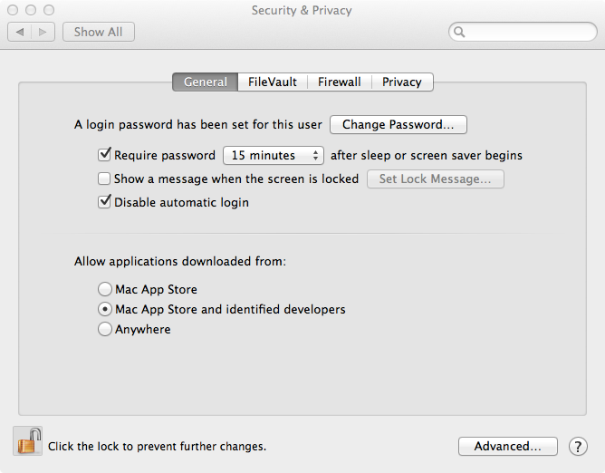
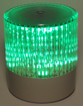
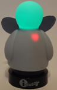
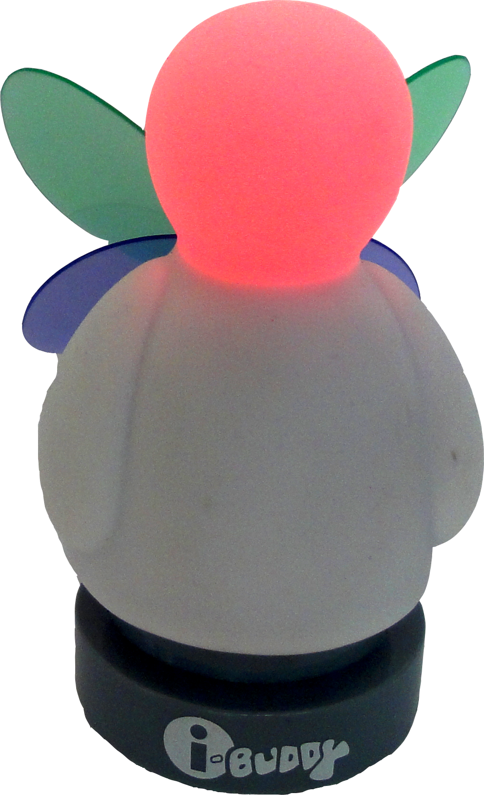

CIBuddy code is licensed under the Apache License v2.0 (aka ASL 2.0). The HID driver however is an exception and licensed under a very liberal Source Attribution license.
Based on this licensing model there is practically no limitation on using the binaries. You could deploy them where ever you seem fit and even charge for them - it is up to you. In case you are planning on reusing part of the code - this is also fine (even for commercial use). The used licenses are not viral, so you don't have to be afraid of business implications - you don't even have to publish changed code. In case even this liberal license is not fitting you're needs, just drop us a note and we'll work something out.
At the current point in time, CIBuddy does NOT support authentication against any of the supported CI-Servers. However, depending on your environment other mechanisms might be possible as a workaround (such as a distinct tunnel or machine based authentication provide by 3rd party tools).
Well, in case you have a question that is neither answered by this FAQ, nor the Documentation page, you could drop us a tweet @CIBuddy or write an e-mail to mirkojahn "at" gmail.com. Bugs and open issues should be directed to this page: https://github.com/cibuddy/cibuddy/issues.
Requesting information about the usage page of a connected device is rather expensive and so the libusb devoloper decided to not implement this feature. The i-buddy unfortunately exposes two HID interfaces per device which are other wise not distinguishable. As a work
around one could just test which device is working on the console by typing cib:test-efd X, where X is the number of the device. If the device is working property, different color are indicated on the device and printed to the console for reference.
When connecting an eXtreme Feedback Device with USB to your computer it is not picked up within a couple of seconds (15 should be fine usually, even for ARM base systems). Executing the command cib:list-efds returns no devices. This could have multiple reasons.
The first an most simple one might be missing permissions. Try shutting down CIBuddy ("CTRL"+"D") and starting it again by calling sudo ./karaf. In case this works, you did not have access rights for the USB device. Either you continue using sudo (not recommended) or you define a udev rule, like described here. A configuration file with some more details is located here and a template for supported devices by CIBuddy could be found here.
CIBuddy using a native library to access the HID stack on top of USB. In order to access and connect to the USB stack libusb-1.0 has to be installed. Use your package manager to actually install the library. On Ubuntu for instance you could try something like this:.
sudo apt-get install libusb-1.0-0
In case this doesn't work you could also try the dev version:
sudo apt-get install libusb-1.0-0-dev
When checking the console for started bundles (by entering la), various bundles are in the installed state and never get resolved or started. This is a known problem on some windows system. The easiest work around is to manually start all bundles that are in the installed state.
In case the cibuddy feature is not automatically installed, once you started all existing bundles, you have to manually install the cibuddy feature. This is easily achieved by calling this: feature:install cibuddy-main
In order to run CIBuddy as a service (no matter which OS), just execute the following command lines:
CIBuddy@root> features:install wrapper CIBuddy@root> wrapper:install -s AUTO_START -n CIBDUDDY -d CIBuddy -D "CIBuddy Service"
This command will install a Windows service called CIBuddy Service that is started automatically.
With OS X 10.8 Apple introduced a new security system called GateKeeper, which requires all applications to be signed in order to run without user intervention. Java applications are also affected and need to be signed. CIBuddy is currently not signed with an Apple certificate, which would cost an annual fee. However, every release (not SNAPSHOTS) is signed with a pgp key to proof its source.
A work around to install CIBuddy is to right-click and select "open" or disable GateKeeper all together by selecting Anywhere for the Allow applications downloaded from: menu (not recommended!!!).
Besides software wrappers (like the demo light as part of CIBuddy), various USB HID class devices are supported out of the box and work right away. The list these devices is illustrated in the table below.
| Name | VendorId/ProductId | Status | Pricerange | Picture |
|---|---|---|---|---|
| Delcom USB Light GenII | 4037/45184 | Successfully tested | 86-100 US Dollar |  |
| Delcom USB Light GenI | unknown | NOT compatible | 86-100 US Dollar | |
| i-Buddy 1st Generation | 4400/0001 | Successfully tested | 8-15 Euro |  |
| i-Buddy 2nd Generation | 4400/0002 | Successfully tested | 5-20 Euro |  |
| Black i-Buddy | 4400/0003 | Successfully tested | 12-20 Euro | |
| "unknown" i-Buddy | 4400/0004 | Not tested | unknown | |
| i-Buddy Devil | 4400/0005 | Successfully tested | 8-20 Euro | |
| i-Buddy Queen | 4400/0006 | Successfully tested | 15-30 Euro |